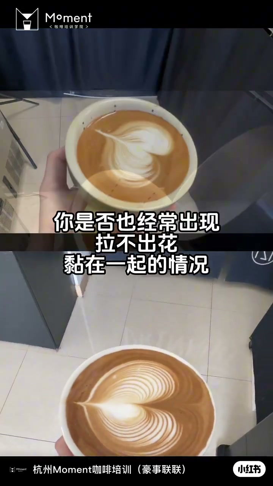
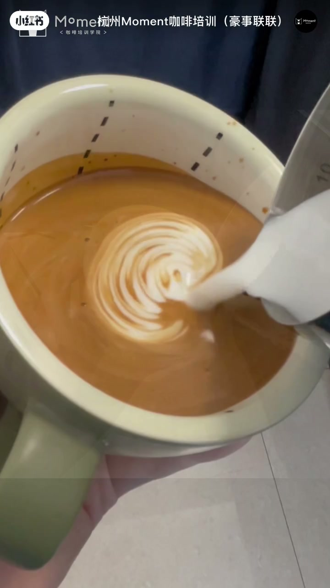
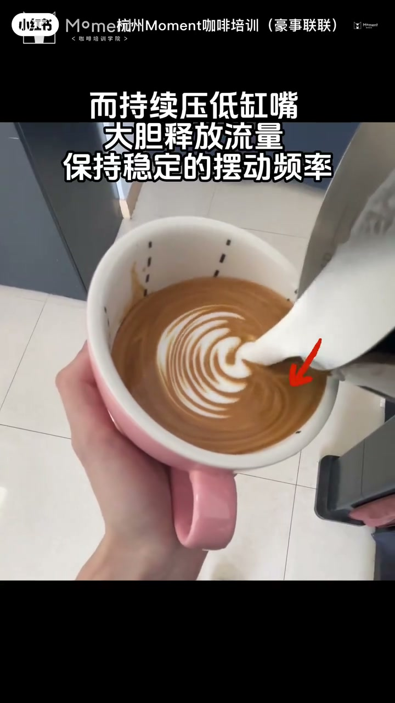
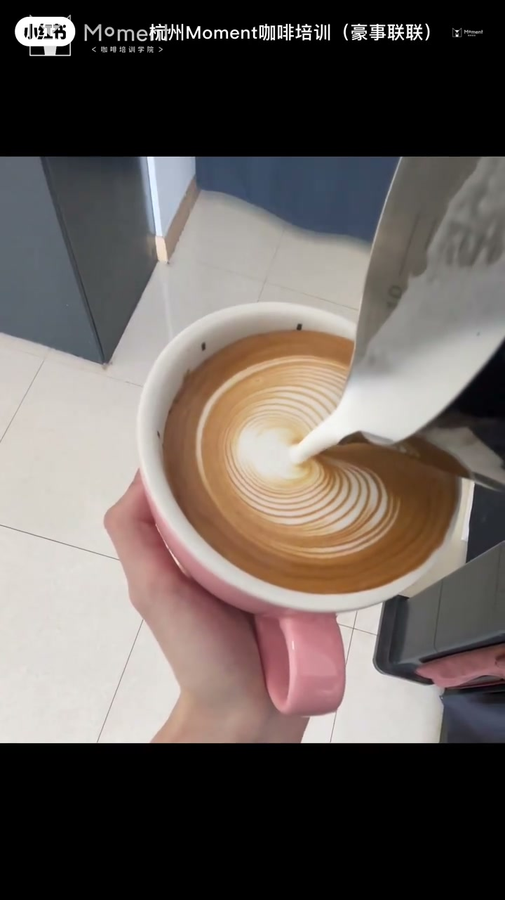

内容要点
杭州 Moment 咖啡培训用约半分钟点破「拉不出花、图案黏在一起」的常见原因：流距太高。奶沫无法顺利浮在表面，缸嘴不够贴近液面，只能等液面满上来才显白，收尾也容易难看。对策很短：持续压低缸嘴、大胆释放流量、保持稳定摆动频率。
知识结构
[00:00→00:17]
问题诊断
拉不出花、黏在一起，重点常是流距太高；奶沫难浮面，缸嘴离液面远，只能等满杯才显白，收尾差。
[00:17→00:26]
三步调整
持续压低缸嘴、大胆释放流量、稳定摆动频率；立刻调整试试。
总结
拉花「黏成一团」时先查流距，而不是先怪手法花哨不够：缸嘴贴住液面、流量放开、摆动频率稳住，白沫才容易浮出来并收干净。
00:00-00:17拉不出花：流距太高是重点
开场直接问痛点：是否经常拉不出花、图案黏在一起？重点其实是流距太高——奶沫无法顺利浮在表面；缸嘴不够贴近液面，只能等液面满上来才显白，收尾也会不好看。


00:17-00:26压低缸嘴 + 大胆流量 + 稳定摆动
对策三句：持续要压低缸嘴，大胆释放流量，保持稳定的摆动频率，效果会更好。片尾催你赶快调整试试——本片几乎不讲花型名称，只钉流距这一变量。


完整转录（14段）
以下文本由 Whisper medium 模型自动转录，可能存在少量识别误差，已尽可能修正。
你是否也经常出现
拉不出花
黏在一起的情况
重点其实就是因为
流距太高
染墨无法顺利浮在表面
钢嘴不够贴近页面
只能等页面满上来才显白
收尾也会不好看
而持续要低钢嘴
大胆释放流量
保持稳定的摆动频率
效果会更好
赶快调整试试吧